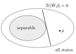

7 Detecting entanglement
For pure states, entanglement is easy to diagnose: look at the reduced state. Real sources produce mixed states, and there the question “is this state entangled?” becomes subtle — in general it is even computationally hard. This chapter defines separability for mixed states, explains its operational meaning in terms of local operations and classical communication (LOCC), and presents the two standard tools: the Peres–Horodecki partial-transpose criterion and entanglement witnesses.
7.1 Pure states: the reduced-state criterion
From Chapter 5, a pure state \(\ket\psi_{AB}\) is entangled iff \(\hat\rho_A = \mathrm{Tr}_B\ket\psi\bra\psi\) is mixed. In components, with \(\ket\psi = \sum_{ab}\psi_{ab}\ket{ab}\) and the coefficient matrix \(\Psi = [\psi_{ab}]\), \[\hat\rho_A = \mathrm{Tr}_B\bigl[\ket\psi_{AB}\bra\psi\bigr] = \sum_{k=0}^{d_B - 1}\,{}_B\!\braket{k|\psi}_{AB}\braket{\psi|k}_B = \Psi\Psi^\dagger .\]
For \(\ket\psi = \tfrac12\ket{11} - \sqrt{3/8}(\ket{01} + \ket{10})\) of Chapter 6, \(\Psi = \begin{pmatrix} 0 & -\sqrt{3/8}\\ -\sqrt{3/8} & \tfrac12\end{pmatrix}\) and \[\hat\rho_A = \Psi\Psi^\dagger = \begin{pmatrix} 3/8 & -\tfrac12\sqrt{3/8}\\ -\tfrac12\sqrt{3/8} & 5/8\end{pmatrix}, \qquad \mathrm{Tr}\,\hat\rho_A^2 = \tfrac{23}{32} < 1 .\] The eigenvalues are \(\tfrac12(1 \pm \sqrt{7}/4) \approx 0.83, 0.17\): the state is entangled, but not maximally.
7.2 Mixed states: separability
A state \(\hat\rho_{AB}\) is separable if it can be written as a convex combination of product states, \[\hat\rho_{AB} = \sum_i p_i\,\hat\rho_A^{(i)}\otimes\hat\rho_B^{(i)}, \qquad p_i \geq 0,\ \sum_i p_i = 1;\] otherwise it is entangled.
Note that \(\hat\rho_A\) being mixed no longer implies entanglement: \(\hat{\mathbb 1}/4\) is separable but has maximally mixed marginals.
Operational meaning. Separable states are exactly those that Alice and Bob can prepare with local operations and classical communication (LOCC): a shared random number \(i\) (drawn with probability \(p_i\)) tells each to prepare \(\hat\rho_A^{(i)}\) and \(\hat\rho_B^{(i)}\) locally. Conversely, LOCC cannot create entanglement from separable states, and cannot increase it on average. Entanglement is therefore the resource that LOCC cannot produce — the currency of teleportation, QKD with entanglement and dense coding.
Deciding separability is hard in general (NP-hard for large dimensions), because a state admits infinitely many decompositions. We need criteria.
7.3 Transpose and partial transpose
The transpose \(\hat\rho^T\) (in a fixed basis, \(\braket{j|\hat\rho^T|k} = \braket{k|\hat\rho|j}\)) of a density operator is again a density operator: same eigenvalues. It is a positive map. The partial transpose acts on one subsystem only: \[\bigl(\ket a\bra{a'}\otimes\ket b\bra{b'}\bigr)^{T_B} = \ket a\bra{a'}\otimes\ket{b'}\bra b, \qquad \braket{a, b|\hat\rho^{T_B}|a', b'} = \braket{a, b'|\hat\rho|a', b}.\]
If \(\hat\rho_{AB}\) is separable, then \(\hat\rho^{T_B}\) is positive semidefinite. Equivalently, a negative eigenvalue of \(\hat\rho^{T_B}\) proves entanglement.
Proof. \(\hat\rho^{T_B} = \sum_i p_i\,\hat\rho_A^{(i)}\otimes(\hat\rho_B^{(i)})^T\), and each \((\hat\rho_B^{(i)})^T\) is a density operator; so \(\hat\rho^{T_B}\) is itself a separable state, hence positive. \(\square\)
For \(2\times 2\) and \(2\times 3\) systems, positivity of the partial transpose is also sufficient for separability. In higher dimensions there exist entangled PPT states (“bound entangled” states, from which no pure entanglement can be distilled).
The partial transpose is the simplest example of a map that is positive but not completely positive: applied to one half of an entangled state, it can produce something that is not a state. This idea returns in Chapter 8.
\[\hat\rho_W = p\,\ket{\Psi^-}\bra{\Psi^-} + (1 - p)\frac{\hat{\mathbb 1}}{4}, \qquad 0 \leq p \leq 1 .\] In the basis \(\ket{00}, \ket{01}, \ket{10}, \ket{11}\), \(\ket{\Psi^-}\bra{\Psi^-}\) has entries \(\tfrac12\) at \((01,01)\) and \((10,10)\) and \(-\tfrac12\) at \((01,10)\) and \((10,01)\). The partial transpose moves the off-diagonal entries to \((00,11)\) and \((11,00)\), giving \[\hat\rho_W^{T_B} = \begin{pmatrix} \frac{1-p}{4} & 0 & 0 & -\frac p2\\ 0 & \frac{1+p}{4} & 0 & 0\\ 0 & 0 & \frac{1+p}{4} & 0\\ -\frac p2 & 0 & 0 & \frac{1-p}{4}\end{pmatrix},\] with eigenvalues \(\tfrac{1+p}{4}\) (three times) and \(\tfrac{1 - 3p}{4}\). The Werner state is entangled iff \(p > \tfrac13\) (PPT is necessary and sufficient for two qubits). Note that it violates CHSH only for \(p > 1/\sqrt2\): there are entangled states with local correlations.
7.4 Entanglement witnesses
The set of separable states is convex and closed. By the Hahn–Banach separation theorem, every entangled state can be separated from it by a hyperplane.
A Hermitian operator \(\hat W\) is an entanglement witness if \[\mathrm{Tr}[\hat W\hat\sigma_{AB}] \geq 0 \ \text{ for every separable } \hat\sigma_{AB}, \qquad \mathrm{Tr}[\hat W\hat\rho_{AB}] < 0 \ \text{ for some entangled } \hat\rho_{AB}.\]

Figure: a witness is a hyperplane leaving all separable states on one side; states on the other side (\(\mathrm{Tr}[\hat W\hat\rho] < 0\)) are certified entangled.
A witness is an observable: measuring it requires only local measurements (decompose \(\hat W\) into products of local operators), no full tomography. A negative expectation value proves entanglement; a non-negative one proves nothing. Every entangled state has some witness detecting it, but each witness detects only part of the entangled set.
Let \(\hat W = \hat{\mathbb 1}\otimes\hat{\mathbb 1} - \hat\sigma_x\otimes\hat\sigma_x + \hat\sigma_y\otimes\hat\sigma_y - \hat\sigma_z\otimes\hat\sigma_z\). Since \(\ket{\Phi^+}\bra{\Phi^+} = \tfrac14(\hat{\mathbb 1} + \hat\sigma_x\hat\sigma_x - \hat\sigma_y\hat\sigma_y + \hat\sigma_z\hat\sigma_z)\), we have \(\hat W = 2\hat{\mathbb 1} - 4\ket{\Phi^+}\bra{\Phi^+}\). A product state has overlap at most \(\tfrac12\) with \(\ket{\Phi^+}\), so \(\langle\hat W\rangle \geq 2 - 4\cdot\tfrac12 = 0\) on product states and, by convexity, on all separable states. On \(\ket{\Phi^+}\), \(\langle\hat W\rangle = -2\).
7.5 Exercises
Show that a negative expectation of a witness on any state \(\hat\rho'\) implies that \(\hat\rho'\) is entangled.
Solution. By definition \(\mathrm{Tr}[\hat W\hat\sigma] \geq 0\) for all separable \(\hat\sigma\). If \(\mathrm{Tr}[\hat W\hat\rho'] < 0\), then \(\hat\rho'\) cannot be separable.
For \(\hat\rho_w = (1 - p)\ket{\Phi^+}\bra{\Phi^+} + \tfrac p2\bigl(\ket{00}\bra{00} + \ket{11}\bra{11}\bigr)\), find for which \(p\) the witness above detects entanglement, and compare with the Peres criterion.
Solution. \(\braket{\Phi^+|\hat\rho_w|\Phi^+} = (1-p) + \tfrac p2(\tfrac12 + \tfrac12) = 1 - \tfrac p2\), so \(\langle\hat W\rangle = 2 - 4(1 - \tfrac p2) = 2p - 2 < 0\) for all \(p < 1\). Partial transpose: \(\hat\rho_w\) has diagonal \((\tfrac12, 0, 0, \tfrac12)\) and coherence \(\tfrac{1-p}{2}\) between \(\ket{00}\) and \(\ket{11}\); transposition moves it into the \(\{\ket{01}, \ket{10}\}\) block \(\begin{pmatrix}0 & \frac{1-p}2\\ \frac{1-p}2 & 0\end{pmatrix}\), with eigenvalue \(-\tfrac{1-p}{2} < 0\) for \(p < 1\). Both criteria agree: entangled iff \(p < 1\); at \(p = 1\) the state is the separable classical mixture of \(\ket{00}\) and \(\ket{11}\).
7.6 Sources
Prof. Vallone, Quantum Information and Computing, lecture 8 (partial-trace criterion with the cake state, mixed-state entanglement, LOCC, partial transpose, Peres criterion with Werner states, entanglement witnesses) and the evaluated homework (exercise 3). Nielsen & Chuang, Section 2.4.3 and Chapter 12.5. Further reading: R. Horodecki, P. Horodecki, M. Horodecki and K. Horodecki, Quantum entanglement, Rev. Mod. Phys. 81, 865 (2009); A. Peres, Phys. Rev. Lett. 77, 1413 (1996).